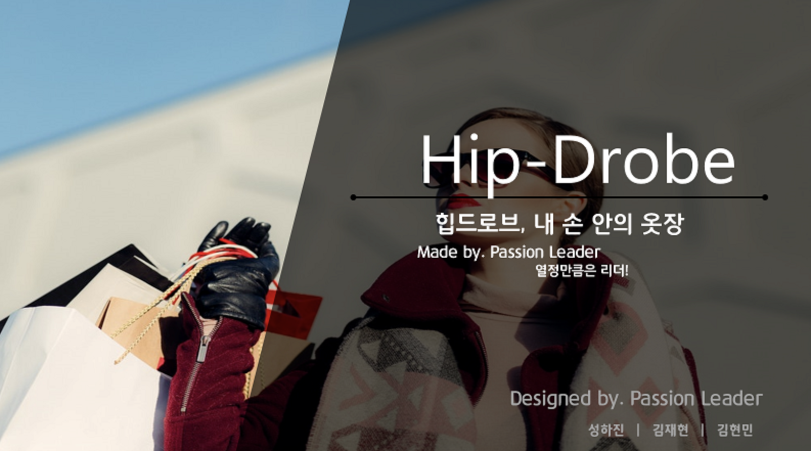

Hyunmin Kim(1991.02.15)
멈추지 않는 겸손한 개발자
산업공학을 전공하며 SCM과 SAP ERP 수업을 수강하며 Digital Transformation의 중요성에 관해 깨닫게 되었습니다.
해당 분야에 필요한 역량을 기르기 위해 약 7개월간의 멀티캠퍼스에서의 오픈API활용 빅데이터 전처리 및 시각화 교육과정을 수료하였습니다. 이를 통해 팀원들과의 협업과 소통, Tool을 활용한 버전관리, 스케줄 관리, 검색 능력등의 중요성을 배웠습니다.
또한, 문제를 하나하나 해결해 나가는 과정에서 뿌듯함과 보람을 느낄 수 있었습니다.
교육과정 수료를 원동력으로 웹 개발 및 SQL 언어에 관한 공부를 개인 Github 계정에 꾸준히 기록하며 멈추지 않고 있습니다.
꾸준히 배우는 자세와 겸손함으로 저의 역량을 길러 협업 시 시너지를 발휘하는 개발자가 될 것입니다.
Experience
오픈API활용 빅데이터 전치리 및 시각화
교육 내용
1. SQL 언어를 통한 데이터의 CRUD 처리 방법, 시계열에 따른 데이터 분석, 이상치 검출, 중복 검출, SQL 분석함수 등을 공부하였습니다.
2. Web Client 프로그래밍 기술들인 HTML5, CSS3, JavaScript, Ajax 학습과 Web 크롤링을 이용한 빅데이터 수집에서 많이 사용하는 CSS Selector와 Xpath 구현 방법을 공부하였습니다. 또한, Ajax로 생성되는 Web 페이지를 크롤링하기 위해 Ajax 기술을 집중적으로 공부하였습니다.
3. Hadoop 클러스터 구축을 위한 Linux 운영체제 사용방법과 HDFS 활용 빅데이터 분산 저장, MapReduce를 활용한 분산처리, Spark를 이용한 인메모리 방식의 빅데이터 처리, 병렬 분산 처리 등을 학습해 빅데이터 인프라 구축 방법에 곤해 공부하였습니다.
4. R 통계분석 언어로 빅데이터의 분석과 시각화를 공부하였습니다. 또한, 웹크롤링, ggplot2 등의 패키지를 이용해 고급 시각화 구현 방법을 공부하였습니다.
수상
해커톤 프로젝트 우수상 (2019.12.13)

켄이치골프코리아
방학기간 교내 현장실습 과정을 통해 유통 실무를 배우고 싶어 켄이치 골프 코리아 회사에 근무하였습니다.
골프 용품 유통회사이며 주 업무는 ERP 시스템을 통한 전산등록업무,해외 법인으로 부터 주문서 이메일 번역, 주문 내역 검토, 전화 피드백이였습니다.
사무보조 업무를 통해 골프 용품 산업의 프로세스를 배울 수 있었고, 사내 보고 체계에 관한해서도 잘 알게 되었습니다.
Education
가천대학교 (본교)
- 데이터베이스 시스템
- SCM
- SAP ERP
- CAD/CAM
- 생산운영관리
- 원가회계시스템
한라대학교 (본교)
영동고등학교 (서울)
Skills
Portfolio
엄마의 지도

멀티캠퍼스에서 두번째 프로젝트로 개발한 '엄마의 지도' 프로젝트입니다.
카카오 MAPs API를 이용하였고 Ajax를 통해 회원가입과 로그인 기능을 구현하였고, 가입시 입력한 지역에 근거한 위치를 IP 주소를 바탕으로 받아와 나타내었습니다. 또한, 지도상에 색깔별로 유치원의 운영 여부를 나타내었습니다.
상세 페이지에서는 R을 통해 리뷰데이터를 바탕으로 감정분석 결과를 시각화하였고, 지역 중심 유치원 순위, 평점 별점 산정의 기능을 구현하였습니다.
"GITHUB"Hipdrobe
최근 멀티캠퍼스에서 빅데이터 전처리/시각화 교육을 받으며 해커톤 프로젝트로 개발한 온라인 `나만의 옷장` 프로젝트입니다.
무료 PaaS 서버를 사용하여 최초 로딩 시 레이턴시가 있지만 실제 작동하고 있습니다(무료 서버인 관계로 업로드한 이미지가 약 30분 후에 초기화되지만 접속한 동안은 정상적으로 기능을 테스트 할 수 있습니다).
Hipdrobe 페이지 "GITHUB"Blindspot Finder

최근 멀티캠퍼스에서 빅데이터 전처리/시각화 교육을 받으며 실무 프로젝트로 개발한 ‘Blindspot Finder’ 프로젝트 입니다.
카카오 MAPs API를 이용하였고 R을 통하여 분석해낸 사각지대를 지도상에 정확하게 표현하기 위해 google에서 위/경도에 따른 좌표 보정 공식을 통해 시각화하였습니다. 시연만 하고 배포는 하지 않았지만 풀 소스의 DATA를 가지고 있어 지금도 실행 가능합니다.
"GITHUB"